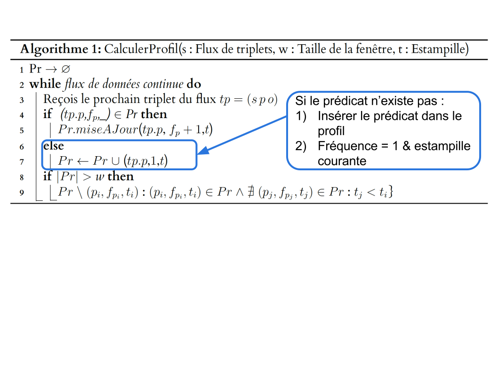
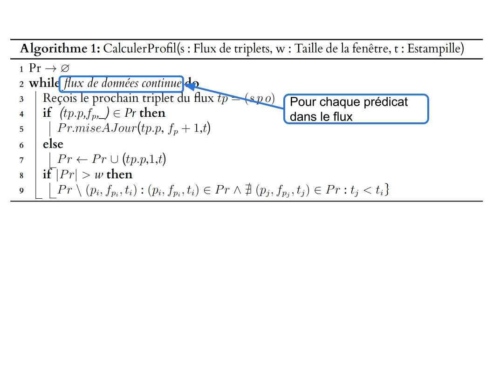
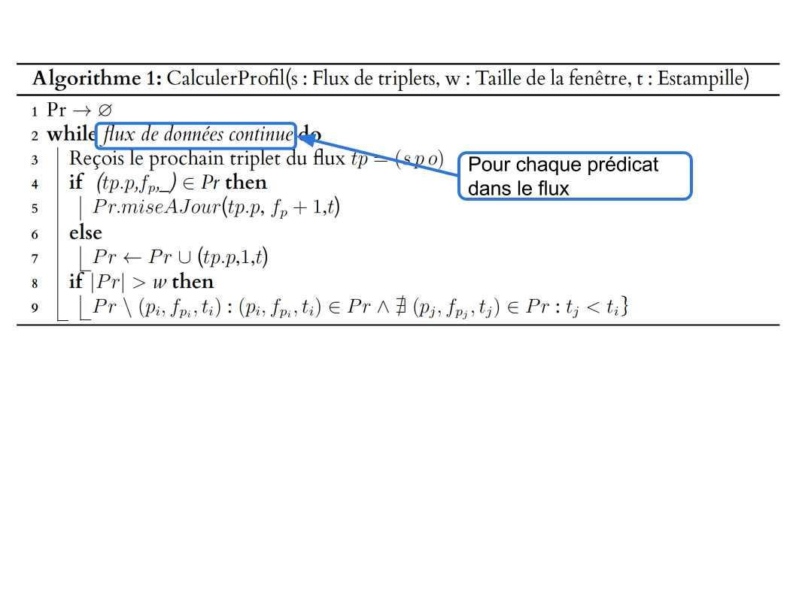
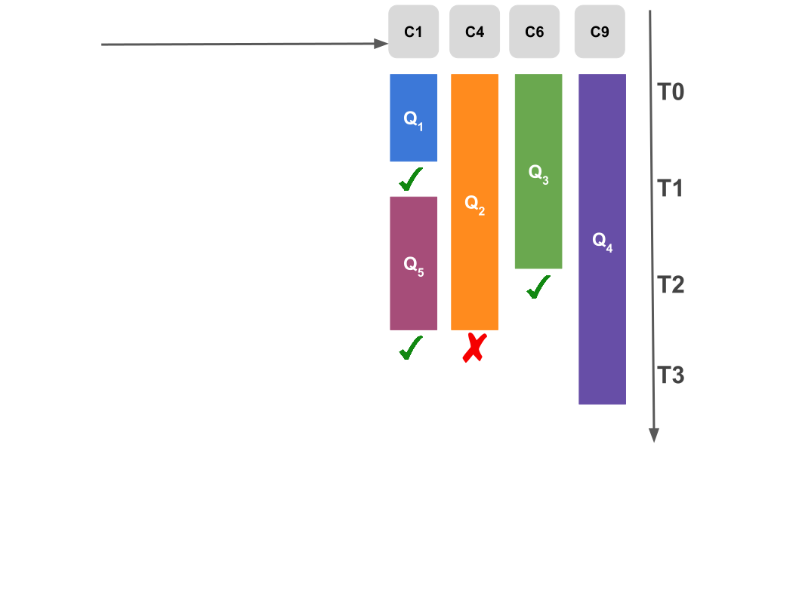
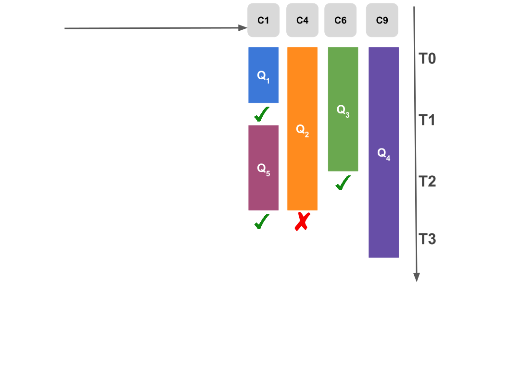
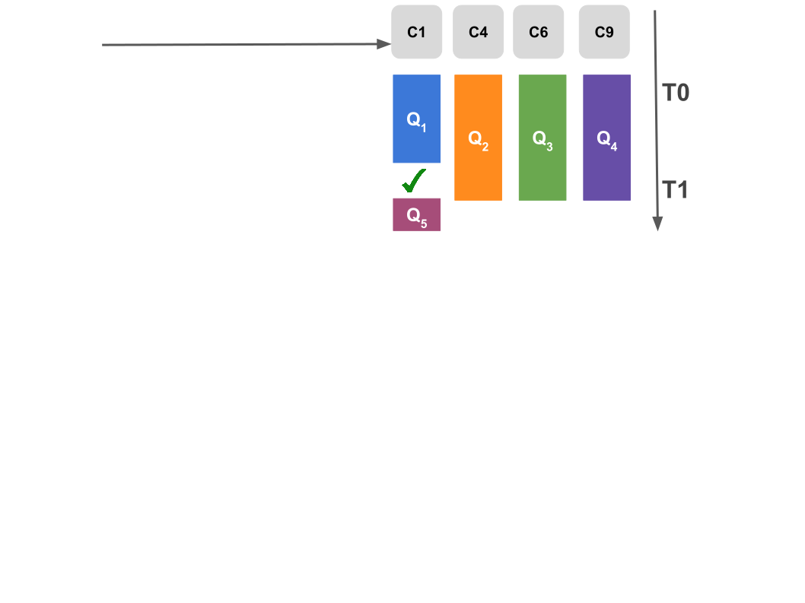
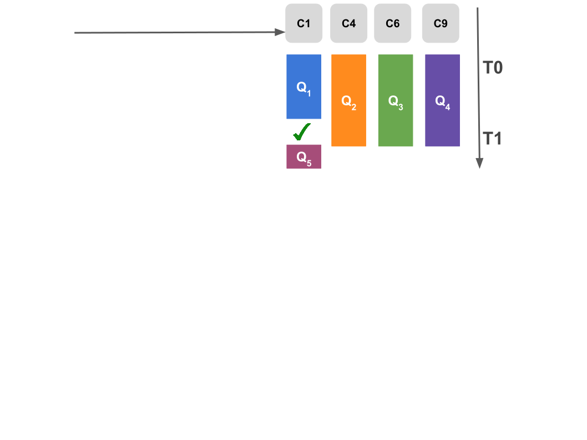

Collaboration dans une fédération de
consommateurs de données liées
Pauline Folz
Thèse de doctorat soutenue le
12 octobre 2017
Jury
| Rapporteurs : | Catherine Faron Zucker, Maître de conférences/Hdr, Sophia Antipolis |
| Esther Pacitti, Professeur, Université de Montpellier | |
| Examinateurs : | Hubert Naacke, Maître de conférences, Université Paris 6 |
| Marc Gelgon, Professeur, Université de Nantes | |
| Membre invité : | Hervé Jaigu, Chargé de missions innovation, Nantes Métropole |
| Directeur : | Pascal Molli, Professeur, Université de Nantes |
| Co-encadrante : | Hala Skaf-Molli, Maître de conférences, Universté de Nantes |


Quels sont les joueurs de foot espagnol qui jouent dans le club de leur ville natale ?
| Web Sémantique | |

|

|
Exploration de nouveaux compromis

Considérer plusieurs clients pour exécuter des requêtes SPARQL
Faire collaborer ces clients
Augmente les ressources du côté client :
- Espace disque
- Capacité de calcul
- Bande passante
Si les clients collaborent en partageant leurs ressources.
Est-il possible d’obtenir un meilleur compromis entre performances et disponibilité des données ?
Triple Pattern Fragment
Les caches jouent un rôle important dans les performances de TPF :

- Les caches contiennent des fragments
- Les fragments sont suceptibles d'être réutilisés localement ou à travers les clients

Client TPF 1 exécute Q1
 152 Appels HTTP
152 Appels HTTP
| 0 | ?book http://www.w3.org/1999/02/22-rdf-syntaxns#type http:.../ontology/Book |
| 1 | ?book http:.../ontology/author ?author |
| 2 | http:.../resource/%22...And Ladies of the Club%22 http:.../ontology/author ?author |
| 3 | http:.../resource/%22A%22 Is for Alibi http:.../ontology/author ?author |
| 4 | http:.../resource/%22B%22 Is for Burglar http:.../ontology/author ?author |


Que se passe t'il si les clients collaborent ?
Si les clients collaborent
 Le cache local d'un client peut être partagé avec les autres :
Le cache local d'un client peut être partagé avec les autres :
- Réduit la charge du serveur
Défi :
- Réseau avec un million de clients
Comment un client peut trouver rapidement un fragment chez un autre client ?
Travaux connexes
Table de hachage distribuées (DHT) : distribue le cache à travers les participants [5] :

+Trouve le fragment s'il existe
- Une requête SPARQL → 20 000 appels HTTP → 20 000 sauts log(n), n: nombre de pairs
Travaux connexes
Cache comportemental : connecte un nombre fixe de nœuds similaires [6] :

+ Accès direct sans latence
- Pas de garantie de trouver le fragment
Expérimenté avec des historiques de navigation Web
Et si on utilisait les caches comportementaux pour des historiques de requêtes ?
Approche de TPF
 Beaucoup de clients accèdent au serveur TPF de manière concurrente, mais
les clients ne collaborent pas.
Beaucoup de clients accèdent au serveur TPF de manière concurrente, mais
les clients ne collaborent pas.
Connecter les clients TPF
 Connecte les nœuds à travers un réseau d'échantillonage aléatoire
des pairs (RPS) :
Connecte les nœuds à travers un réseau d'échantillonage aléatoire
des pairs (RPS) :
- Chaque nœud maitient une vue partielle du réseau
Phases d'échange de voisins :
- renouvelle périodiquement les voisins
- gère les arrivées et départs des nœuds et les partitions réseau
Réseau implémenté par Cyclon [8]
Comment gérer la similarité ?
 Le réseau RPS garantit la connectivité entre tous les clients
Le réseau RPS garantit la connectivité entre tous les clients
C3 est connecté à C6 :
- C3 → DBpedia
- C6 → DrugBank
- C3 n'est pas similaire à C6
Nécessite un second réseau superposer pour gérer la similarité comme proposé dans Gossple [9]
Connecter les clients TPF similaires
 Réseau superposé de similarité (CON) :
Réseau superposé de similarité (CON) :
- Chaque nœud à un profil basé sur l'historique des requêtes qu'il a exécutées
Les phases d'échange de voisins permettent d'obtenir des voisins plus similaires
Chaque nœud classe et sélectionne les meilleurs voisins selon la similarité de leurs profils
Comment profiler les nœuds ?

Exécuter des requêtes produit un flux de fragment, le cache est une fenêtre sur de flux
Profil = résumé du passé récent = fréquence des k derniers prédicats utilisés
Algorithme de profilage
 

Exemple - Algorithme de profilage

Expériences

Jeux de données : Berlin Benchmark (BSBM) [10], choisit pour la simulation d'applications Web
Requêtes : Chaque client a un emsemble de 25 requêtes générées à partir de 12 modèles
Environnement : Un serveur TPF et un cache Web
Echange de voisins : toutes les 30 secondes
2 phases: initialisation et mesures
CyCLaDEs avec deux communautés

Deux communautées accédent deux jeux de données BSBM différents sur le même serveur
Les nœuds sont sur le même réseau aléatoire
Est-ce que CyCLaDEs grâce aux profils va bien détecter les deux communautés ?
Est-ce que la précision du profil impacte la définition des communautés ?

Paramètres : 2 BSBM 1M, 50 clients par jeu de données, cache = 1000
Dans le réseau superposé CON, CyCLaDEs contruit deux communautés distinctes : BSBM1 et BSBM2
Conclusion
CyCLaDEs construit une fédération de consommateurs de données liées où :
- les clients sont connectés ;
- les clients partagent leurs ressources ;
- les clients construisent un cache décentralisé collaboratif.
CyCLaDEs réduit le nombre d'appels au serveur dans le contexte d'applications Web
Perspectives
Mesurer l'impact sur le temps d'exécution
Explorer d'autres mesures de similarité :
- distance géographique ;
- confiance ;
- etc.
Comment exécuter ses requêtes ?
Chaque client à des requêtes à exécuter
C1 a un ensemble de requêtes Q1-Q6 à exécuter
Est-ce C1 les exécute lui-même ou avec ses voisins ?
Equilibrer sa charge
Déléguer des requêtes à des voisins est avantageux si :
A quelles conditions cette inégalité est-elle vraie ?
Sauf que le serveur à encore du temps libre


Est-ce que paralléliser les requêtes permet d'aller plus vite ? Enlever
Exemple - Algorithme d'allocation de requêtes

 

 


Expériences
Configurations :
Supposons une fédération de 6 médiateurs avec des requêtes

|

|

|